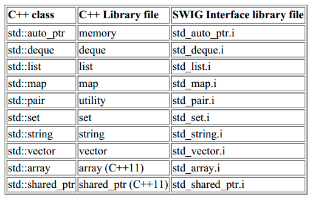

SWIG Misc
Good Reference
SWIG 之为 C/C++ 的 API 生成 Python 调用借口基础
http://walkerdu.com/2017/12/06/swig-basic/
SWIG所做的事情其实就是两件事：
* 根据要调用的C API生成Wrapper函数，作为胶水来让脚本解析器和底层C函数进行交互. * 为生成的Wrapper函数生成脚本语言的调用接口。SWIG中在没有指令%{…%}包裹下直接使用#include声明是会被SWIG忽略的，除非在执行SWIG命令时加上-includeall选项，SWIG之所以对C/C++ 传统的#include进行忽略是因为：我们并不是希望SWIG去包装引入的头文件中的所有系统头文件和一些辅助文件。所以由此就可以知道%include引入的文件，会忽略其中的#include部分。
下图是SWIG关于STL 基本容器的封装(
) 